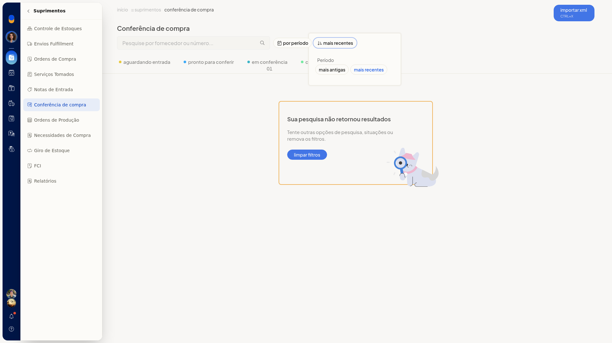
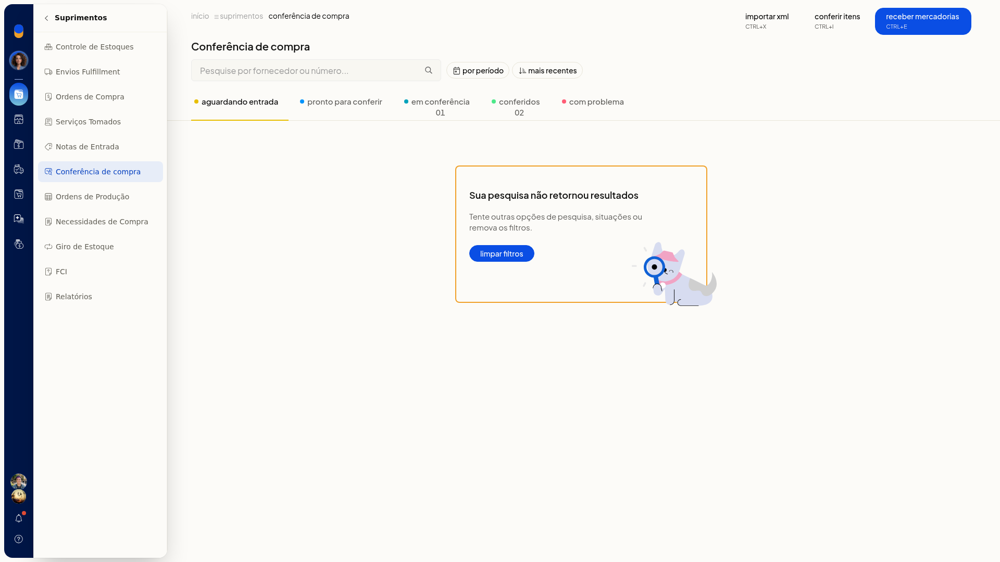
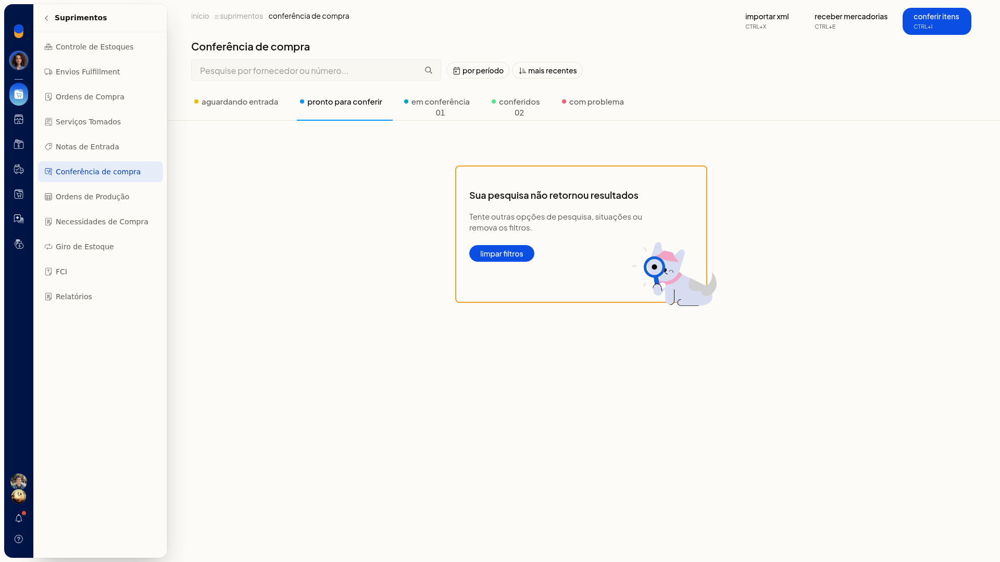
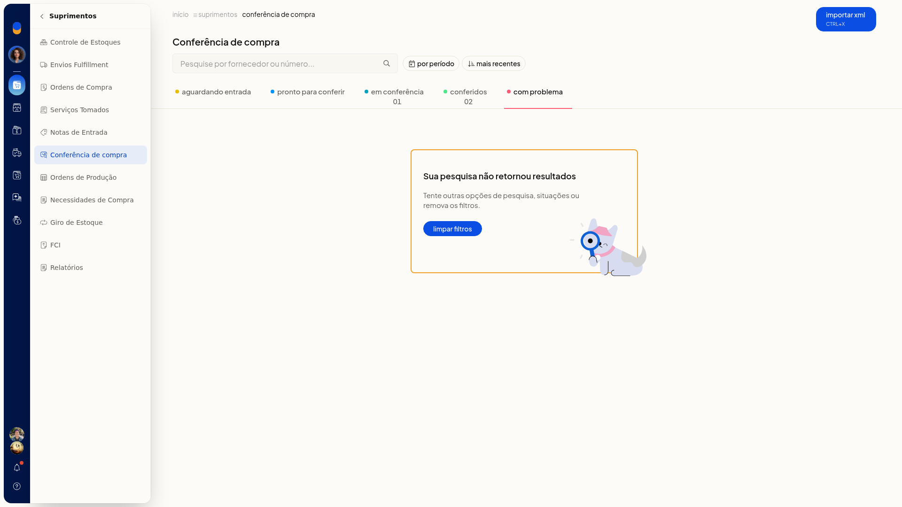
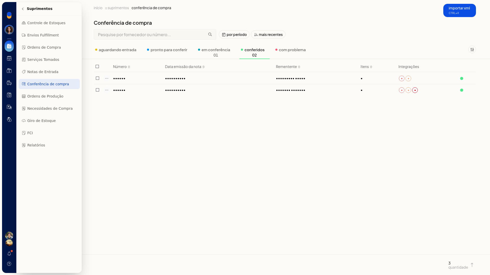
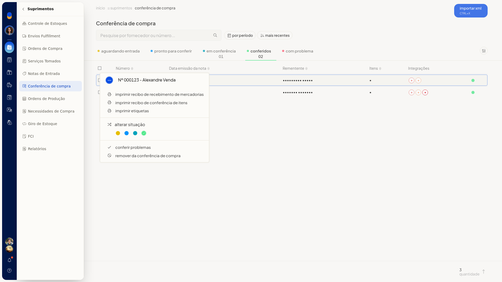

Conferência de compra
Pré-requisitos
- A lista parte de notas ou recebimentos já existentes.
- Para a entrada por XML, tenha um arquivo XML de NF-e.
Importante
- O arquivo XML de NF-e tem limite de 2 Mb.
Instruções
Conferir os itens
-
Acesse Suprimentos > Conferência de compra.
-
Em por período, selecione Sem filtro, Do dia, Últimos 7 dias, Últimos 30 dias, Do mês ou Do intervalo.
-
Ordene por Mais recentes ou Mais antigas.

-
Abra a aba Aguardando entrada, Pronto para conferir, Em conferência, Conferidos ou Com problema. Se não houver notas, a tela mostra Sua pesquisa não retornou resultados.



-
Na aba Conferidos, a lista mostra Número, Data emissão da nota, Rementente, Itens e Integrações.

-
Na aba Em conferência, abra o menu da linha para iniciar recebimento, continuar conferência, reiniciar conferência, imprimir recibo, imprimir etiquetas, alterar situação, conferir problemas ou remover.
-
Na aba Conferidos, abra o menu da linha para imprimir recibo de recebimento, imprimir recibo de conferência, imprimir etiquetas, alterar situação, conferir problemas ou remover.

-
Abra Conferência de itens.
-
Pesquise pela descrição, pelo SKU ou pelo GTIN. Quantidade é opcional.
-
Confira na linha a quantidade contada e a esperada, a descrição, o SKU, o GTIN, o código do fornecedor e a unidade. Clique em Concluir (ctrl+enter), em Informar problemas (ctrl+i) ou em Cancelar (esc).
Informar um problema
- Acesse Suprimentos > Conferência de compra e abra Conferência de itens.
- Clique em Informar problemas.
- Escolha divergência nas quantidades ou item com avaria.
- Selecione Item da nota fiscal, informe Quantidade com problema e preencha Descreva o problema. O informe fica preenchido na tela. Clique em Cancelar para descartar antes de gravar.
Receber mercadorias
- Acesse Suprimentos > Conferência de compra.
- Clique em Receber mercadorias.
- Pesquise pelo fornecedor, pelo número ou pela chave de acesso.
- Pressione ENTER em Receber mercadorias para confirmar. Cancelar sai com ESC.
Importar o XML da NF-e
- Acesse Suprimentos > Conferência de compra.
- Clique em Importar XML (ctrl+x).
- Na Integração por Arquivo XML NFe, selecione o arquivo XML, de no máximo 2 Mb, e preencha Marcadores se quiser.
- Clique em Cancelar para sair. A navegação permanece em Notas Fiscais de Entrada. Para voltar à conferência, acesse Suprimentos > Conferência de compra.
Resultado
A pesquisa mostra as notas da situação e do período escolhidos ou a mensagem Sua pesquisa não retornou resultados. Na conferência de itens, a quantidade contada aparece em relação à esperada antes de concluir.